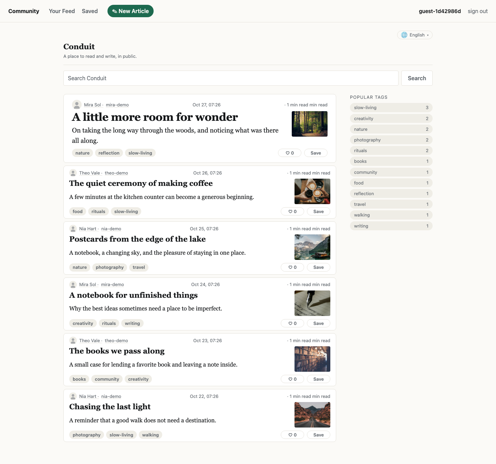
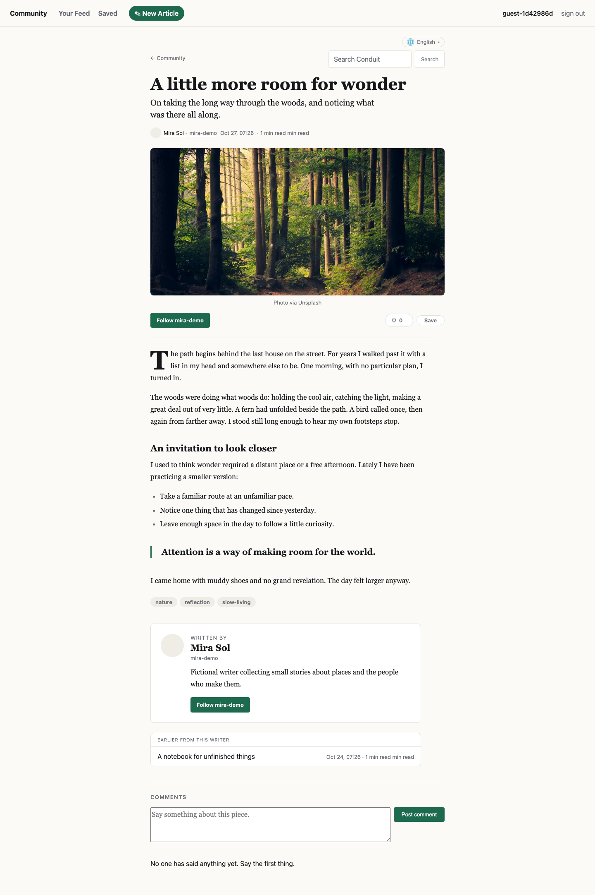
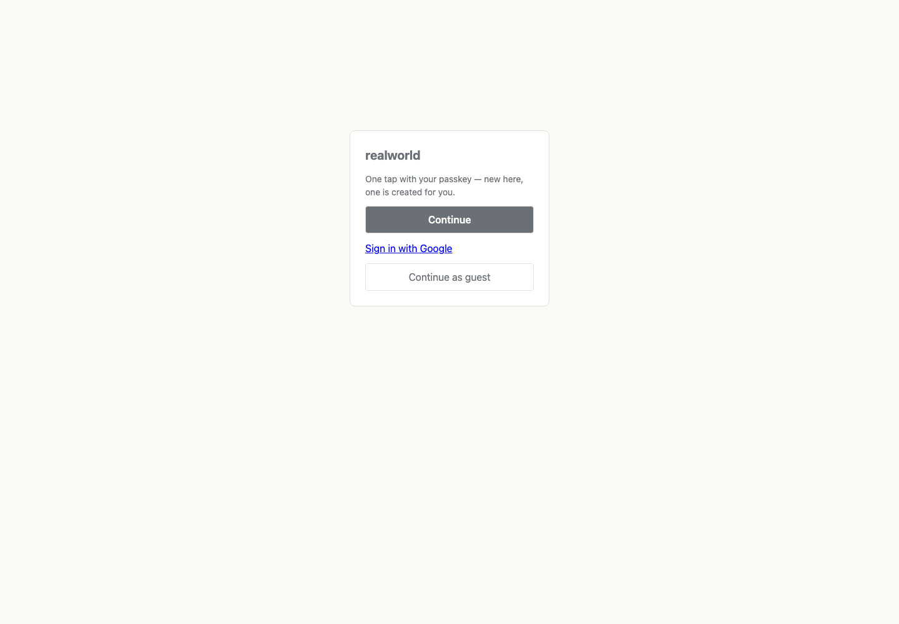
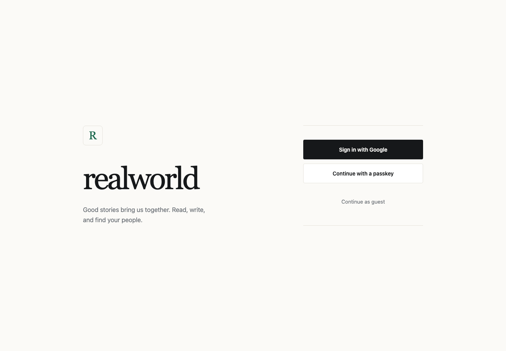
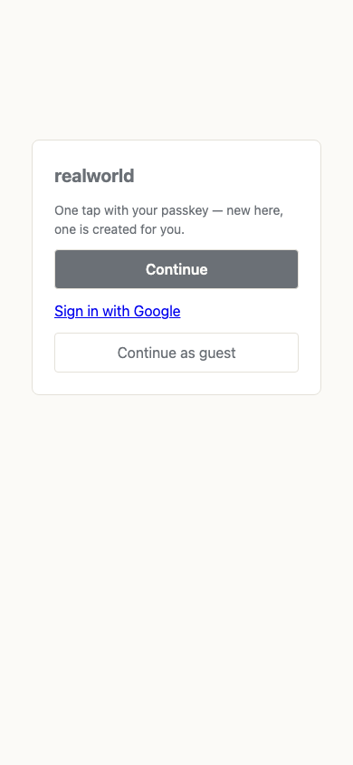
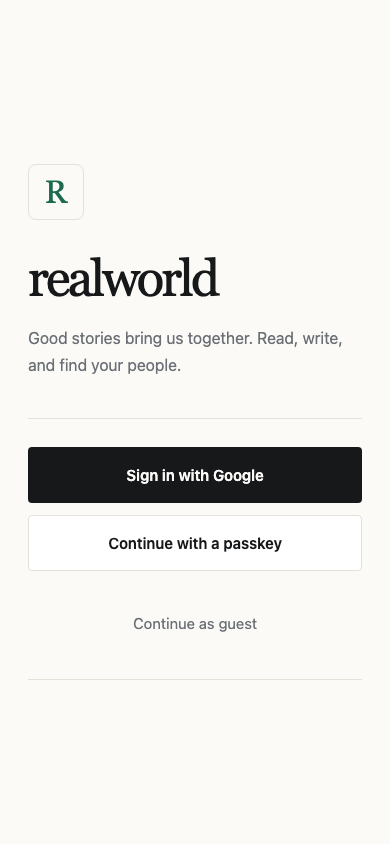
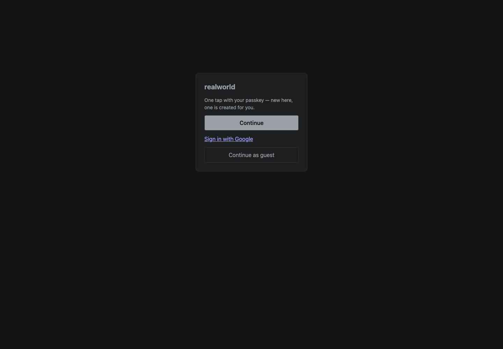
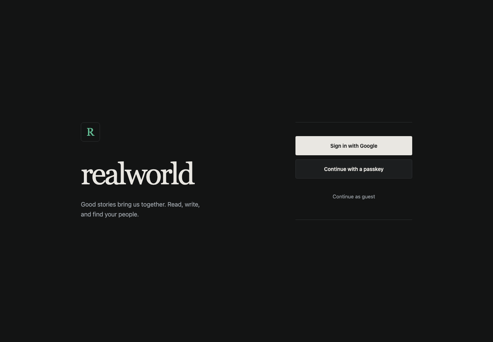

Conduit — Public Social Publishing & Blogging Community
The RealWorld social blogging platform built on Pronto: read global and personalized article feeds, filter by popular tags, publish Markdown stories, follow authors, favorite posts, and discuss articles in threads. Latest product brief ↓
A community ready to read
Before this turn, RealWorld had no declared release target and fresh databases had no starter articles. The Cloudflare release now carries six illustrated stories, fictional author profiles, and a working tag index. The existing editorial design remains the visual contract.

Local Cloudflare Worker, populated from the migration. All six articles and their tags are visible.
Space for a story
Cover photography, readable Markdown, a pull quote, and author context use the app's existing reading layout. The 390-pixel mobile viewport has no horizontal overflow; the cover image loads at both widths.

Desktop · 1440 pixels.Mobile · 390 pixels.
Release checks
The Cloudflare snapshot build, application lint and tests, and the container replay, visual, and favorite integration checks passed. Browser inspection recorded no page errors. Guest authentication loaded the seeded feed and article in the local Worker.
Editorial masthead and action hierarchy at the door
The previous terminal gate centered a small generic card in a large empty page. Its Google action was an unstyled browser link, and “Continue” did not distinguish the passkey ceremony. The accepted Press identity supplied the direction: warm paper, ink, pine, editorial type and quiet rules.
The shared terminal now separates the app introduction from the action panel. A large serif masthead and app-initial monogram provide identity; Google has the strongest full-width control, passkey is outlined and explicitly named, and guest access remains visible but quiet. Dark mode resolves the same tokens.

Before · Desktop

After · Desktop

Before · Mobile

After · Mobile

Before · Dark

After · Dark
Conduit
A place to read and write, in public. Someone comes in, reads what the community has posted, follows the writers worth following, and — when they have something to say — writes it themselves. Everything written here is public to everyone in it, and everything done about it — writing, following, favoriting, commenting — belongs to a person.
People
A person signs in with a passkey, as a guest, or through Google; Conduit gives them a friendly handle, and no two people share one.
What belongs to a person is what they did: their articles, their comments, their follows, their favorites, their own profile. Only the author of an article may change or remove it, only a comment's writer may remove it, and only a person may edit their own profile.
Every person has a public page: their handle, a display name they may set, a line about themselves, and a picture.